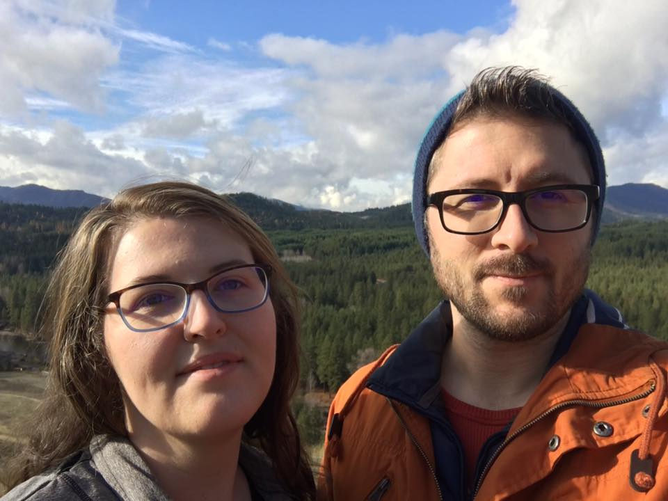
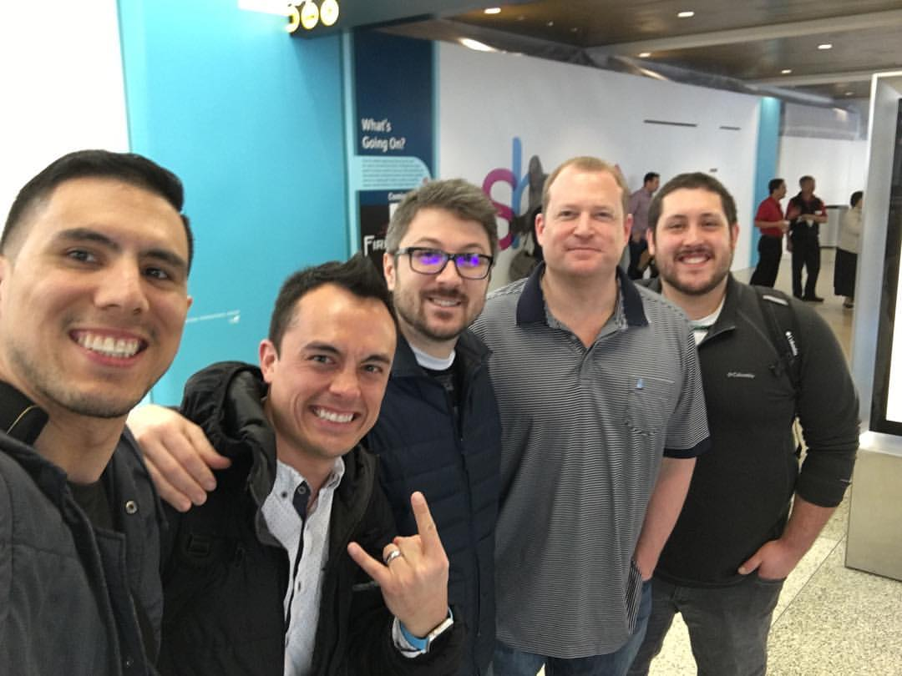
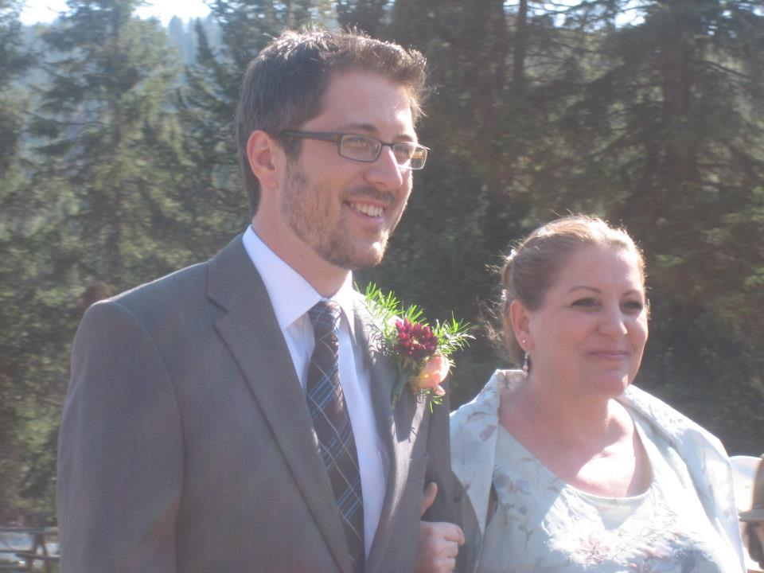
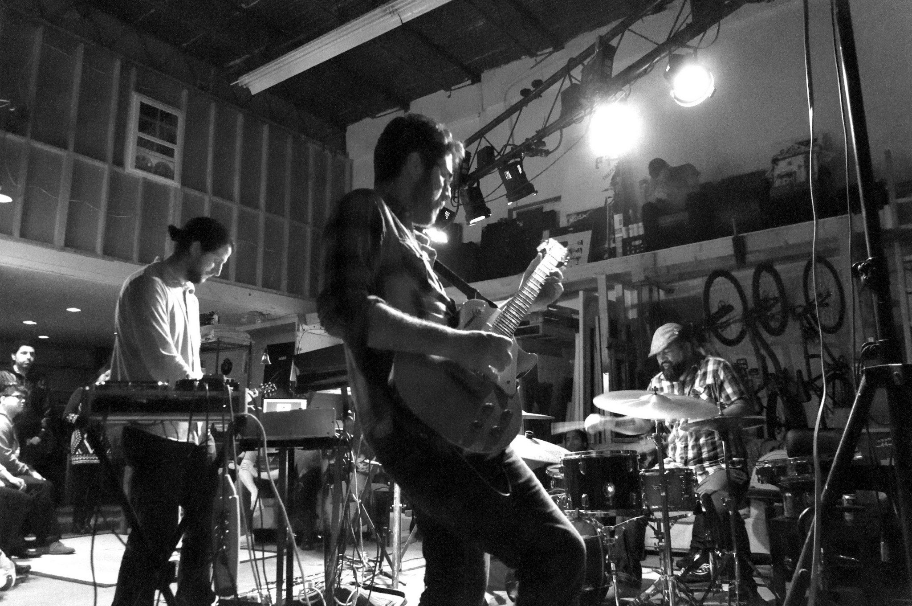
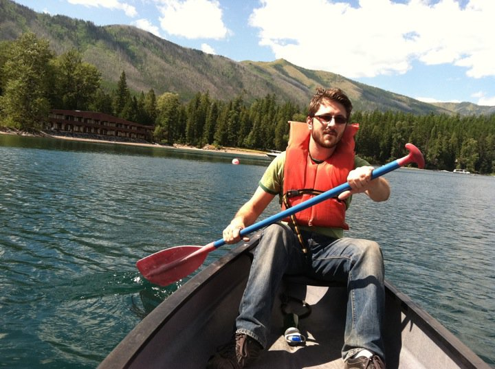

Mick Sexton
Software Engineer
Background, Interests, and Coding Portfolio
About Me
I am an easy-going guy who likes to spend much of my time doing something creative. This can range from anything like playing music to creating programs. I am originally from the east coast (Maryland and DC). My wife, Liz, and I moved out to Seattle in 2014 to buy a house and be closer to her family. I love to learn, and am usually juggling multiple books, podcasts, and audiobooks on topics ranging from philosophy, electronics, music theory, to history. When I'm not trying to build something, I'm usually trying to learn how to do it.
Background
I graduated from the University of Maryland in 2005 and quickly went into B2B sales. I have cold-called door to door, over the phone, worked trade shows, and presented at lectures, study clubs, and conferences. I also recently had the privilege to manage a sales team and take our company's SaaS products to new heights in units sold. Leading my sales team of 14 reps is one of my proudest moments, and I'm glad I had the opportunity to work with such motivated and talented professionals.
While my sales career has been an amazing journey, my natural desires have always pushed me in the direction of wanting to do something more creative. My mom was a painter and a programmer, and I think her influence is still strong with me to this day, even though she is no longer with us. I have programmed as a hobby for years without much formal training aside from some night classes. Realizing how much I enjoyed this, I decided I was in a secure enough position to make a career change. I enrolled in Epicodus' Seattle bootcamp and just finished Week One.
Interests
Music has been my primary hobby since high school. While my main instruments are guitar and lap steel, I have at one point or another, picked up a wide variety of instruments ranging from banjos, to organs, theremins, violins, and saxophones. I am currently learning to play the pedal steel right now. I have played in a handful of different bands, the most notable being Bearshark back when I was in DC. You can listen to our music HERE on Bandcamp. Lately, I have been playing with quieter jazz groups. I also write and record under the solo name Pioneer X, which is mostly instrumental, and is like a folkier version of Bearshark. You can check out my first album of Pioneer X HERE.
 One of my other main hobbies is working with electronics. I like to experiment with different circuit ideas, and solder components together. I also really enjoy working with Arduino because I get to combine electronics and programming. In fact, my favorite project so far was when I created a program that plays a Jazz standard called "Beautiful Love". I wrote the Arduino program in C. I created two arrays - one held the pitches in hertz/frequencies, the other held the duration/delay of each note. I connected my Ardiuno board to a potentiometer (for volume) and a piezo buzzer on a circuit breadboard. The picture on the side is a different Arduino project where I created a digital thermometer with two shift registers.
One of my other main hobbies is working with electronics. I like to experiment with different circuit ideas, and solder components together. I also really enjoy working with Arduino because I get to combine electronics and programming. In fact, my favorite project so far was when I created a program that plays a Jazz standard called "Beautiful Love". I wrote the Arduino program in C. I created two arrays - one held the pitches in hertz/frequencies, the other held the duration/delay of each note. I connected my Ardiuno board to a potentiometer (for volume) and a piezo buzzer on a circuit breadboard. The picture on the side is a different Arduino project where I created a digital thermometer with two shift registers.
I have a lot of interests and don't want to bore you with long descriptions of each of them. Here's a brief list....
- Hiking
- Camping
- Kayaking
- Exploring National Parks
- Reading
- Podcasts and Audiobooks
Coding Projects So Far
Below are some of the projects I have worked on at Epicodus in the first week along with descriptions and technologies used to build them. Each of them also link to my code on my GitHub page. All of these projects were created with a combination of Git, GitHub, Atom, and the Command Line programs. Enjoy!
- Fake Wiki Page - Attempt at imitating Wikipedia's page layout (Bootstrap CSS, CSS, HTML)
- Vacation - Vacation page for Rome, Italy (Bootstrap CSS, CSS, HTML)
- Interior Decorator - Interior designer/decorator business page (CSS, HTML)
- Animal Shelter - Webpage for an animal shelter (CSS, HTML)
- Favorite Band - A fan website dedicated to Joe's favorite band - ACDC (CSS, HTML)
- Sample Blog Site - Has sections for About and a couple blog entries (CSS, HTML)
- Resume - Webpage for a sample resume (CSS, HTML)
- Boring Lecture - Syllabus for a boring history lecture (CSS, HTML)
- Cupcake Shop - Webpage for a cupcake business with different flavors (CSS, HTML)
- Resort - Webpage for a private island resort with different activities and accommodations(CSS, HTML)
- Branching Test Project - An exercise in branching with Git (CSS, HTML)
- Pet Website - Webpage dedicated to my cat, Rappy (CSS, HTML)
- My First Webpage - A basic webpage with images and external links (CSS, HTML)
- Cookie Recipe - Instructions for how to make chocolate chip cookies (HTML)
- Goodbye - Basic webpage with goodbye in different languages (HTML)
- Hello World - Basic webpage with "hello world" in different languages (HTML)